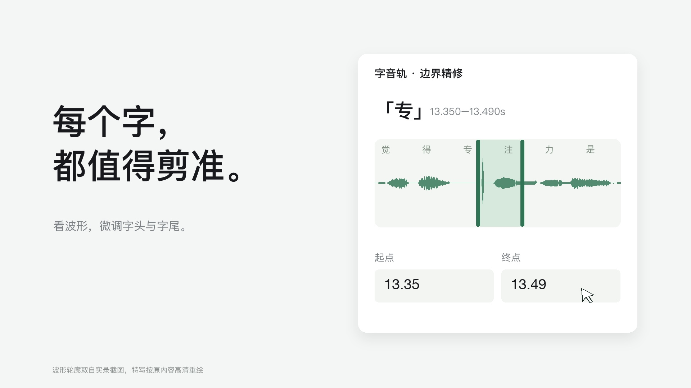

V05 · 字体与界面精修
36 秒 · 1080p / 60 帧。重做中文排版与高清界面特写，保留原来的编辑功能与演示范围。
独立保存 · 不覆盖 V04下载 MP4 ↓
本版制作说明
- 字体改为苹方简体的真实字重，取消描边加粗；重做字号层级、行距和对齐。数字使用 Helvetica Neue，特殊符号回退到支持的字体。
- 全景仍是实录截图。字句选择、字界与波形、配乐控件、导出菜单为依据实录内容高清重绘的广告特写，经过简化排版；不是新的网页版本或连续操作录像。波形轮廓取自实录截图，不是本次重新识别。
- Agent 展示两处处理结果节选：预置说话人和字界的合成样例，经真实剪辑引擎处理；没有实时调用模型 API。配乐拖入仍为后期示意。
- 配乐沿用 V04 的项目原创合成音乐。没有复制或打包系统字体文件，也没有使用苹果的图片、视频或歌曲。
- 影片默认静止，点击后播放。可查看下方静态画面。V01–V04 的成片、预览与文件校验值均保持不变。
查看静态字界画面
